Materi Lengkap
- Buka PowerPoint → pilih Blank Presentation.
-
Pilih tema: Tab
Design → pilih salah satu tema
(misal: Office 2013 - 2022 Theme).
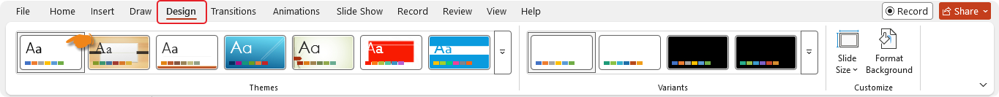
-
Slide 1 — Cover:
- "Click to add title" ketik: "PRESENTASI DIRI" (font besar 44 pt).
- Tab Insert → Text Box
- Nama : Andi Pratama (font besar 18 pt).
- Kelas : Peserta Kursus Office (font besar 18 pt).
-
Klik Insert →
Pictures →
This Device.
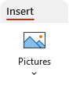
-
Atur foto: Klik 2x pada Foto →
Picture Format →
Crop →
Crop to Shape → pilih
Oval.
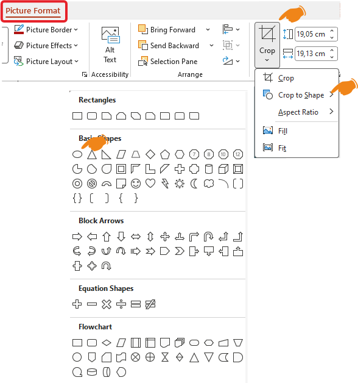
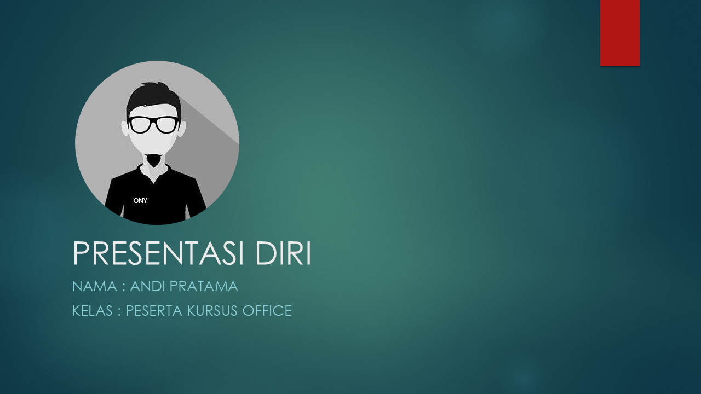
-
Slide 2 — Pendidikan & Pengalaman:
- Klik tab Home.
- Klik New Slide.
-
Pilih layout Two Content.
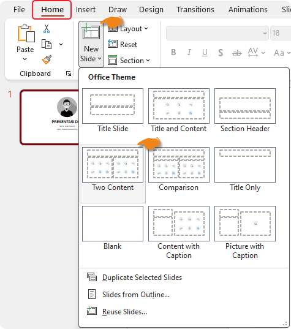
Isi:
- Judul (atas): ketik "PENDIDIKAN & PENGALAMAN", font 36-40 pt.
- Kiri
Pendidikan- SD Negeri 01 Surabaya
- SMP Negeri 05 Surabaya
- SMA Negeri 10 Surabaya
- Kanan
Pengalaman- Ketua Kelas (2023)
- Panitia Acara Sekolah
- Magang Administrasi (2025)
- Font isi: 18-20 pt agar terbaca jelas.
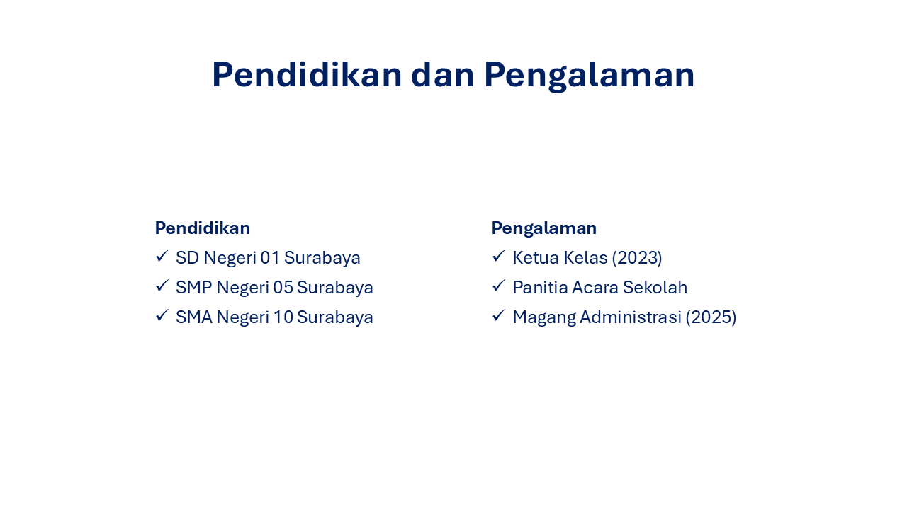
-
Slide 3 — Hobi & Minat:
- Klik Home → New Slide.
-
Pilih layout
Title Only
Judul: "Hobi & Minat", font 36-40 pt.
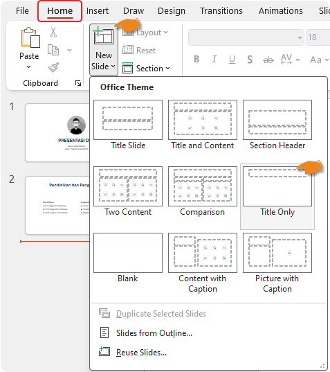
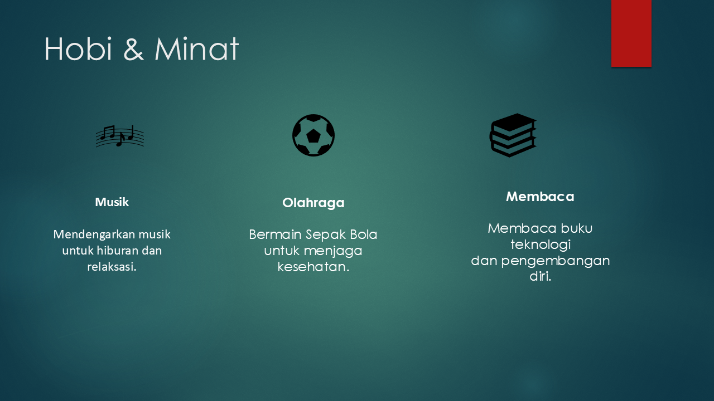
- Klik Insert → Icons.
Pada kotak pencarian, cari:
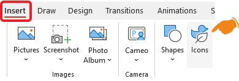
- Music
- Sport
- Book
Pilih beberapa ikon dan Klik Insert.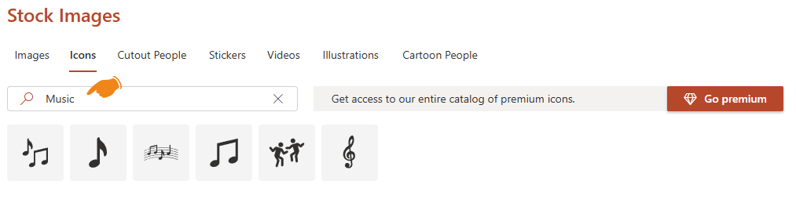
Atur posisi ikon berjajar secara horizontal dengan cara
Pilih atau seleksi ketiga icon.Pada Tab Graphics Format → Klik Align → pilih Align Middle dan Distribute Horizontally.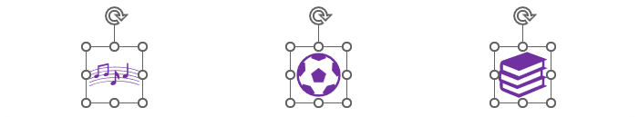
Untuk mengubah warna ikon: Pilih ikon → Tab Graphics Format → Graphics Fill → pilih warna.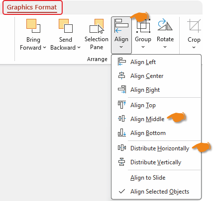
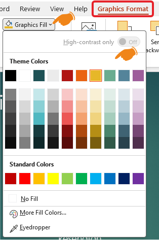
Gunakan Text Box di bawah masing-masing ikon.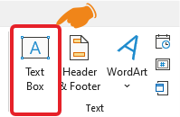
- Musik (font 20-22 pt tebal)
Mendengarkan musik untuk hiburan dan relaksasi. - Olahraga (font 20-22 pt tebal)
Bermain badminton untuk menjaga kesehatan. - Membaca (font 20-22 pt tebal)
Membaca buku teknologi dan pengembangan diri.
👉 Gunakan Align untuk menata posisi teks agar sejajar dengan ikon.
Pilih semua Text Box (3 Text Box) → Tab Shape Format → Klik Align → pilih Align Middle dan Distribute Horizontally.
Jangan lupa untuk teks Rata Tengah semua.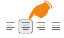


- Simpan file: File → Save → beri nama misalnya Presentasi_Diri.pptx.
-
Contoh Hasil:
- Buka PowerPoint → pilih Blank Presentation.
- Layout → Title Only → judul: STRUKTUR ORGANISASI.
- Tab Insert → SmartArt → pilih Hierarchy → pilih Organization Chart.
- Klik kotak paling atas → ketik: Direktur.
- Klik kotak level 2 → ketik: Manager.
- Klik kotak level 3 → ketik: Staff untuk masing-masing manager.
-
Jika ingin menambah kotak: Klik kanan
pada
Kotak → Add Shape → pilih Add Assistant.
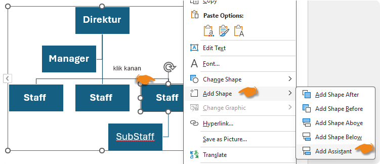
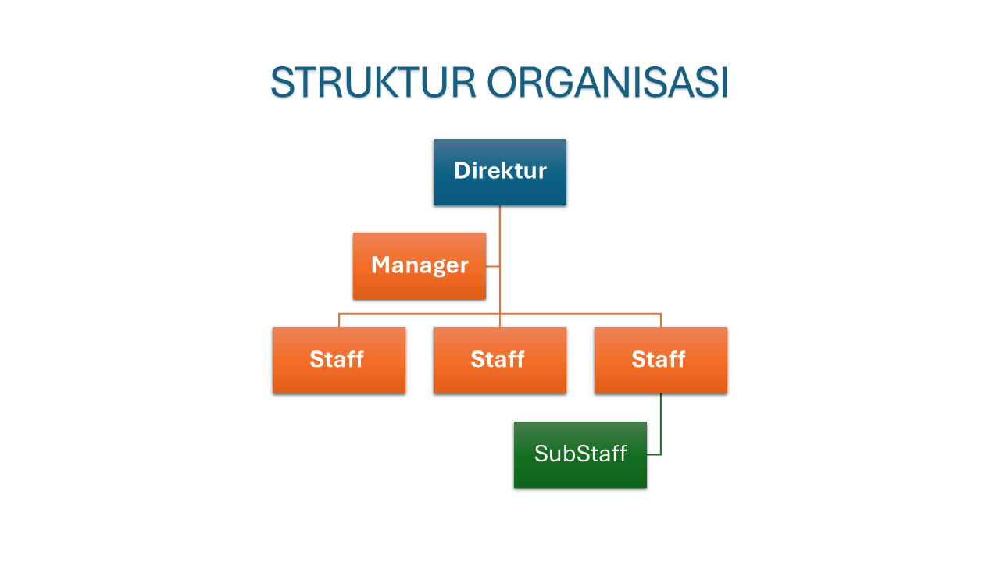
-
Jika ingin ubah warna: Tab SmartArt Design →
Change Colors → pilih skema warna.
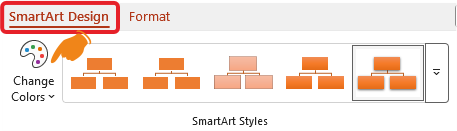
-
Jika ingin ubah Tema: Tab SmartArt Styles → pilih tema
warna.
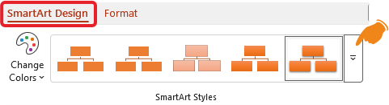
- Buat Slide baru: klik panah kecil New Slide → Title Only → judul: PROSES BISNIS.
- Tab Insert → Shapes → pilih Rectangle: Rounded Corners.
- Gambar 4 kotak secara horizontal dengan jarak kurang lebih sama (gunakan align nanti di langkah 6).
-
Klik kanan masing-masing kotak →
Edit Text → ketik: PROSPEK,
PENAWARAN, NEGOSIASI, DEAL.
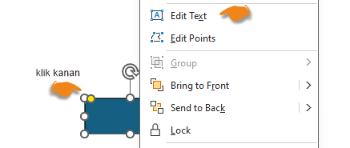
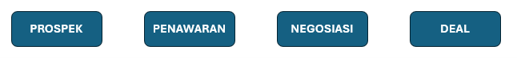
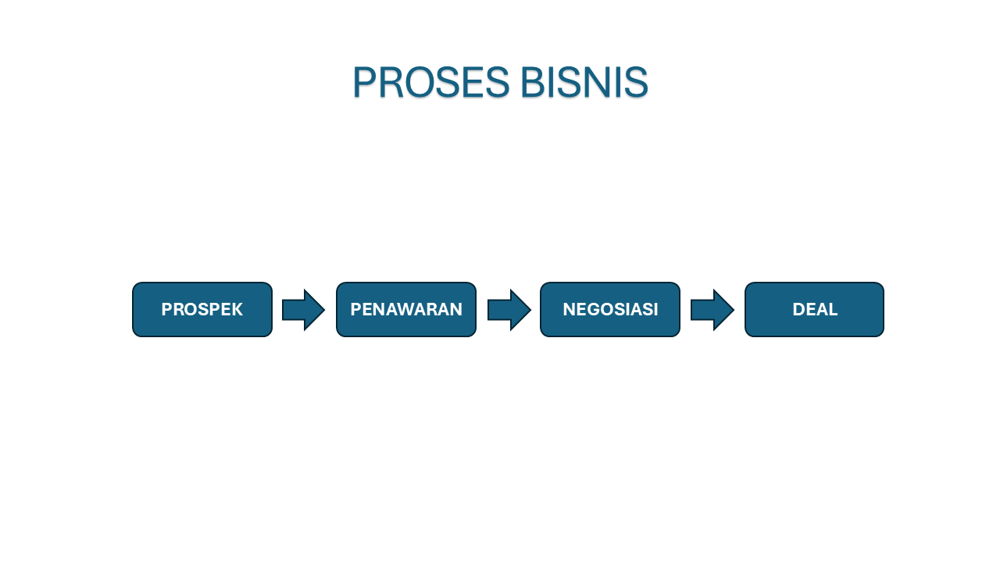
-
Insert →
Shapes → pilih
Arrow (Right) → gambar panah dari
kotak 1 ke 2, 2 ke 3, 3 ke 4.
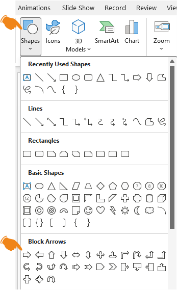
-
Blok semua shapes + panah → Tab
Shape Format →
Align →
Align Middle, lalu
Distribute Horizontally agar
jarak antar kotak sama rata.


-
Ubah warna shapes: Shape Fill → Gradient
pilih warna biru gradasi.
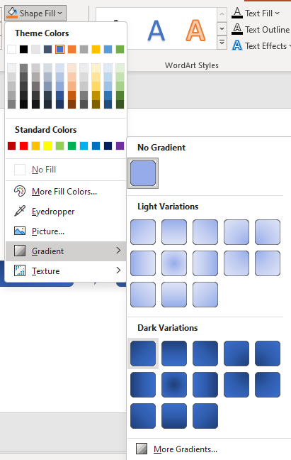

- Buat Slide baru: klik panah kecil New Slide → Title Only → judul: SIKLUS PENJUALAN.
-
Insert → SmartArt → pilih Cycle →
Basic Cycle.
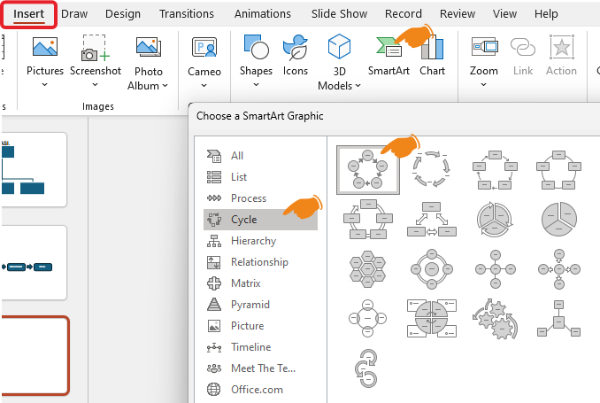
- Ketik teks di masing-masing lingkaran: Prospek, Penawaran, Negosiasi, Deal.
-
Jika ingin ubah warna dan gaya, klik SmartArt di halaman Slide kemudian
dari Tab
SmartArt Design.
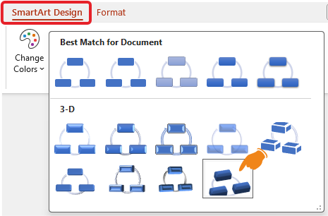
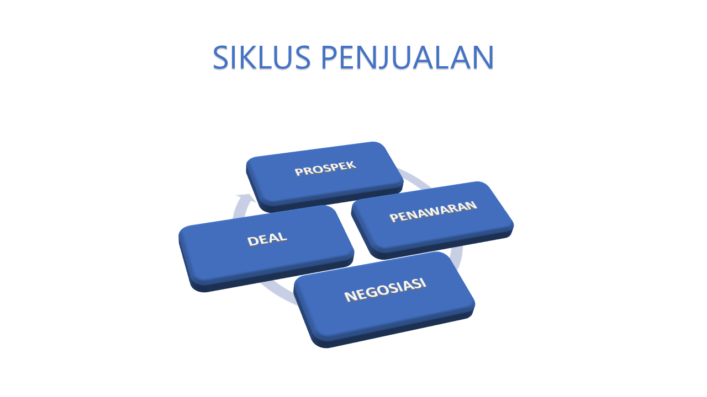
-
Tentukan Skema Warna Tema Profil Perusahaan
- Tab Design → Variants → Colors → Customize Colors.
- Masukkan kode warna sesuai skema warna korporat.
- Simpan skema warna dengan nama Warna Profil Perusahaan
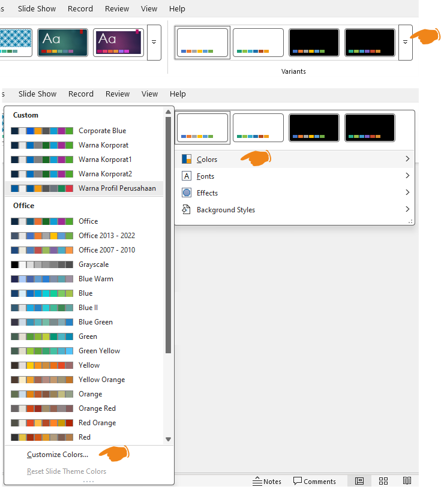
Contoh ubah warna tema:Warna Hex Text/Background – Dark 1 #333333 Text/Background – Light 1 #FFFFFF Text/Background – Dark 2 #005A9E Text/Background – Light 2 #F2F2F2 Accent 1 #005A9E Accent 2 #F39C12 Accent 3 #555555 Accent 4 #6C757D Accent 5 #198754 Accent 6 #DC3545 Hyperlink #0D6EFD Followed Hyperlink #6F42C1 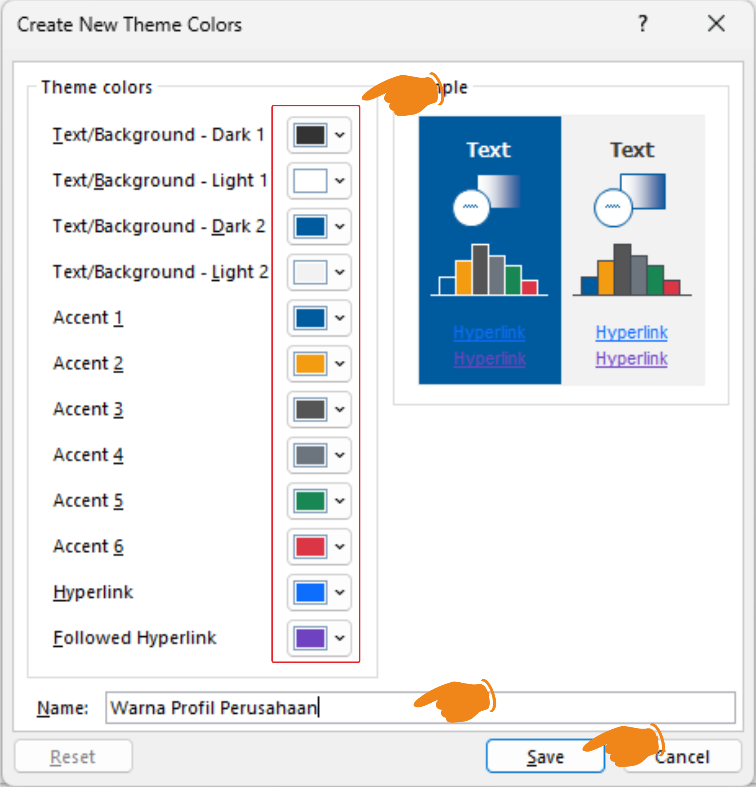
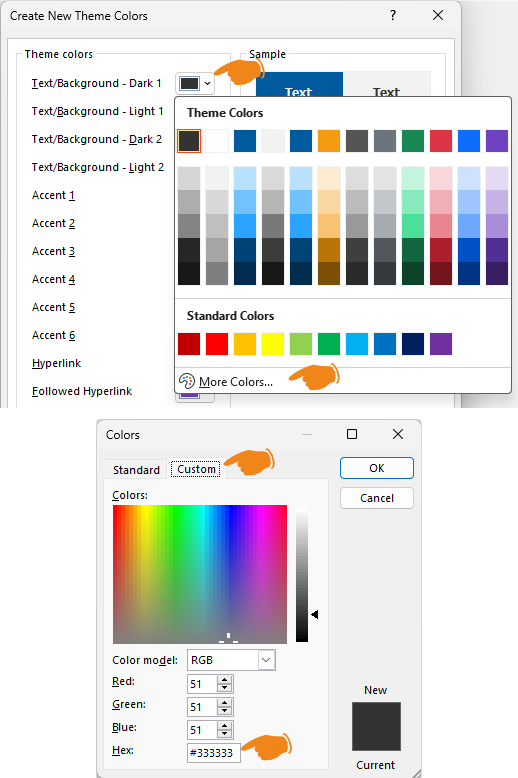
-
Tentukan Skema Font Tema Profil Perusahaan
- Tab Design → Variants → Fonts → Customize Fonts.
-
Pilih font untuk Heading dan Body sesuai skema font korporat.
Contoh:- Heading font: Aptos
- Body font: Aptos
- Simpan skema font dengan nama Font Profil Perusahaan
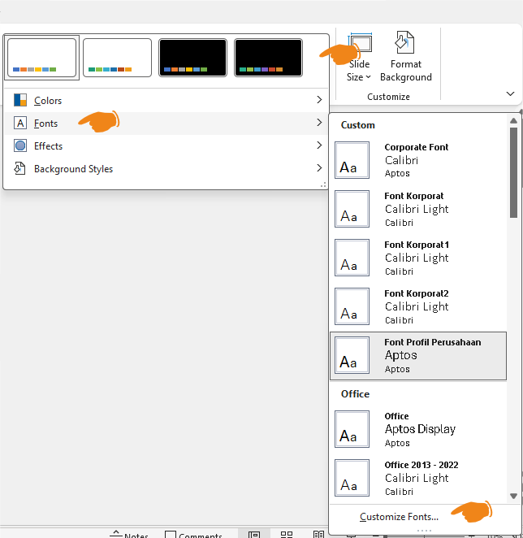
-
Slide 1 — Cover (Halaman Sampul)
Pada latihan ini, Anda akan membuat halaman sampul (cover) untuk presentasi profil perusahaan.
Langkah 1 — Tambahkan Slide Judul- Buka presentasi PowerPoint.
- Pilih Home → New Slide → Title Slide (atau gunakan Slide pertama yang sudah tersedia).
- Klik Click to add text.
- Masukkan teks "PT MAJU JAYA INDONESIA".
Pilih Font yang sudah dibuat sebelumnya Skema Font Tema Profil
Perusahaan.
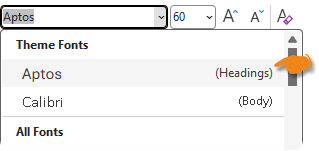
- Insert → Text Box.
- Masukkan Subtitle: "Profil Perusahaan 2026".
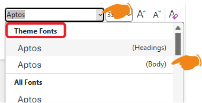
- Atur posisi subtitle di bawah judul.
- Insert → Pictures → pilih logo perusahaan.
- Atur tata letak: Logo di kiri, Teks di kanan.
-
Slide 2 — Visi & Misi:
Pada latihan ini, Anda akan membuat Slide untuk menampilkan visi dan misi perusahaan.
- New Slide → Title Only.
- Judul: "VISI & MISI", font 36-40 pt, tebal.
-
Visi (1 kalimat):
- Insert → Text Box, ketik misal: "Menjadi perusahaan teknologi terpercaya di Indonesia."
- Font 20-22 pt, tebal, rata tengah.
- Beri Shape Fill ringan di belakang teks agar menonjol.
-
Misi (3-5 poin):
- Insert → Icons → cari ikon relevan (target, star, handshake).
- Di samping tiap ikon, ketik misi dengan Text Box, font 18-20 pt.
- Contoh: "Memberikan solusi inovatif bagi pelanggan."
- Gunakan Align untuk merapikan posisi ikon dan teks.
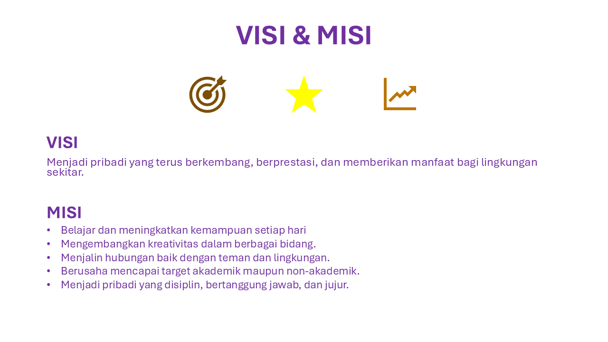
-
Slide 3 — Struktur Organisasi
(SmartArt):
Pada latihan ini, Anda akan membuat Slide untuk menampilkan struktur organisasi perusahaan.
- New Slide → Title Only.
- Judul: "STRUKTUR ORGANISASI", font 36-40 pt.
-
Insert → SmartArt → Hierarchy →
Organization Chart.
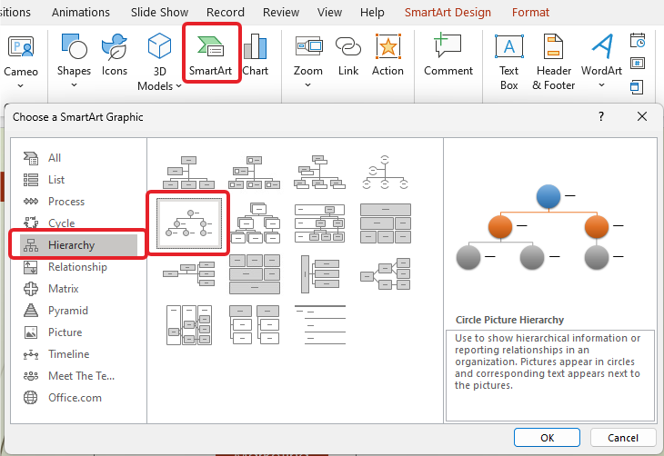
- Isi teks di panel SmartArt:
- Level 1: Direktur Utama
- Level 2: Manager (Keuangan, Produksi, SDM)
- Level 3: Staff di bawah tiap Manager
- Tab SmartArt Design → Change Colors → pilih warna tema korporat.
- Font dalam SmartArt menyesuaikan tema, minimal 12-14 pt agar terbaca.
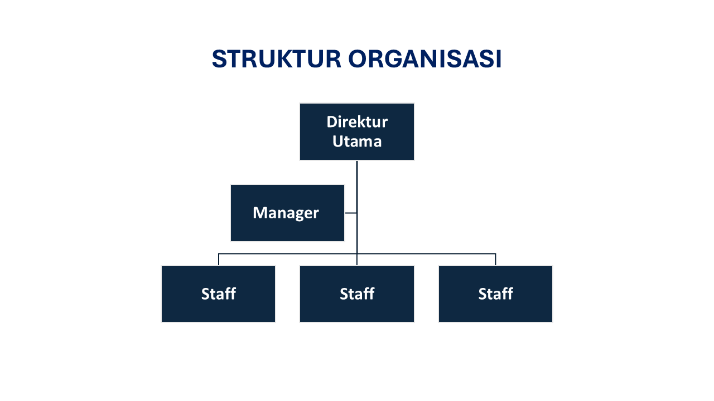
-
Slide 4 — Produk & Layanan:
- New Slide → Title Only.
- Judul: "PRODUK & LAYANAN", font 36-40 pt.
-
Buat 3-4 kolom produk menggunakan Shapes:
- Insert → Shapes → Rectangle: Rounded Corners.
- Gambar 3-4 kotak berjajar, beri jarak sama.
- Blok semua → Tab Shape Format → Align → Align Top + Distribute Horizontally.
- Isi tiap kotak:
- Ikon: Insert → Icons (cari sesuai produk).
- Nama produk: font 20-22 pt tebal, di bawah ikon.
- Deskripsi singkat: font 16-18 pt, rata tengah.
- Warna kotak: Shape Fill → pilih warna tema korporat (Accent 1 atau 2).
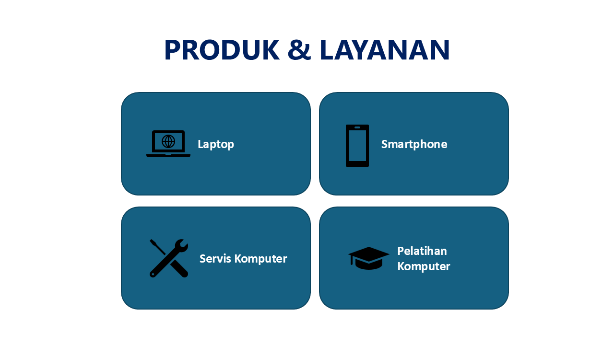
-
Slide 5 — Penutup:
- New Slide → Title Only.
- Judul: "TERIMA KASIH", font 44-48 pt, rata tengah.
-
Di bawah judul, tambahkan Text Box berisi:
- Tagline: "Mari Bekerja Sama!" font 20-22 pt, miring.
-
Informasi Kontak (font 16-18 pt):
- 📧 info@perusahaan.com
- ☎ (021) 555-1234
- 🌐 www.perusahaan.co.id
-
Sosial Media:
- Insert → Icons → cari Instagram, LinkedIn, YouTube.
- Susun berjajar di bagian bawah slide.
- Rapikan dengan Align → Distribute Horizontally untuk ikon sosial media.
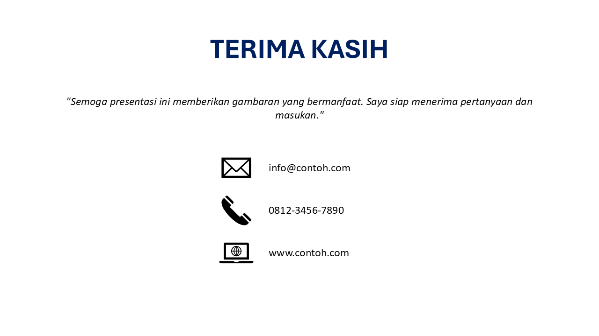
-
Animasi (Opsional): Agar presentasi lebih profesional, tambahkan animasi Fade pada judul dan Wipe pada konten tiap slide. Atur Start → After Previous agar animasi berjalan otomatis.
-
Hasil Akhir — Profil Perusahaan 5 Slide:
Semua slide telah menggunakan tema kustom warna & font korporat dari langkah 1-2 di atas.
- Buka PowerPoint → Blank Presentation.
- Pilih Layout: Tab Home → Layout → pilih Blank (agar gambar leluasa diatur tanpa batasan placeholder).
-
Sisipkan gambar:
- Tab Insert → Pictures → This Device → pilih file gambar.

-
Klik 2x pada gambar → Tab Picture Format → Remove Background. PowerPoint akan mendeteksi latar belakang secara otomatis (warna ungu = area yang akan dihapus).Menjadi:
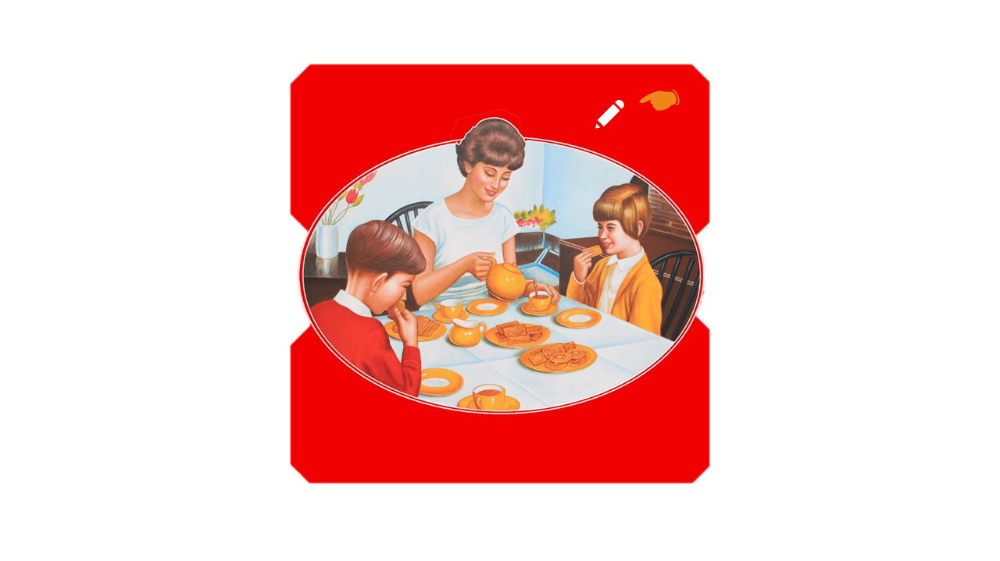
-
Jika ada area yang salah deteksi: gunakan
Mark Areas to Keep atau
Mark Areas to Remove.
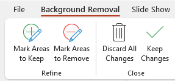
-
Mark Areas to Keep
Menandai bagian gambar yang tetap dipertahankan.
PowerPoint terkadang salah mendeteksi objek sehingga ada bagian yang ikut dihapus, misalnya:- Rambut
- Tangan
- Kaki
- Daun
- Tas
- Logo
- Teks pada gambar
- Klik Mark Areas to Keep.
- Kursor berubah menjadi ikon pensil dengan tanda .
- Klik atau gambar garis pendek pada area yang hilang.
- PowerPoint akan menganalisis area tersebut dan mengembalikannya ke objek.
Tips: Tidak perlu mencoret seluruh objek. Biasanya cukup satu klik atau satu garis pendek pada area yang salah terhapus.
-
Mark Areas to Remove
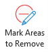
Menandai bagian gambar yang harus dihapus. Digunakan jika masih ada background yang belum terhapus, misalnya:- Pohon
- Tembok
- Langit
- Orang lain
- Bayangan
- Kabel
- Kursi
- Klik Mark Areas to Remove.
- Kursor berubah menjadi ikon pensil dengan tanda .
- Klik atau gambar garis pendek pada area background.
- Area tersebut akan dimasukkan ke bagian yang dihapus.
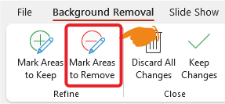
Hasil:
-
Discard All Changes
Membatalkan seluruh proses Background Removal.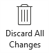
Jika diklik:- Semua tanda Keep dan Remove dihapus.
- Gambar kembali seperti kondisi awal.
- Tidak ada background yang dihapus.
-
Keep Changes
Menyimpan hasil penghapusan background.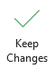
Setelah diklik:- Area yang ditandai untuk dihapus menjadi transparan.
- Mode Background Removal ditutup.
- Anda kembali ke tab Picture Format.
-
Mark Areas to Keep
- Tips: Zoom in (Ctrl + scroll) untuk marking yang lebih presisi.
- Klik Keep Changes → latar belakang gambar hilang.
-
Crop gambar menjadi bentuk circle:
-
Klik gambar → Tab
Picture Format →
Crop →
Crop to Shape.
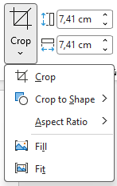
- Pilih Oval (dalam kategori Basic Shapes).
- Klik kembali Crop → pilih Aspect Ratio → 1:1 (Square).
- Sesuaikan posisi crop dengan drag handle.
- Tekan Enter atau klik di luar gambar untuk selesai.
Hasil: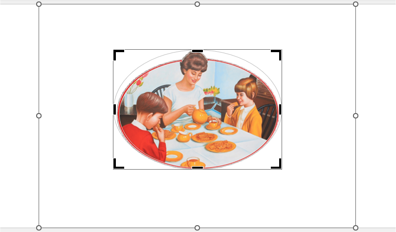

-
Klik gambar → Tab
Picture Format →
Crop →
Crop to Shape.
-
Atur posisi dan ukuran:
- Klik gambar → drag sudut untuk mengubah ukuran (tahan Ctrl agar proporsional).
- Drag gambar untuk memindahkan posisi.
-
Tambahkan efek gambar (opsional):
- Tab Picture Format → Picture Border → beri border putih (Optional). Atau
-
Tab Picture Format → Picture Effects →
Shadow → pilih efek bayangan.
Misalnya Perspective


- Tambahkan tema (opsional): Tab Design → pilih tema bawaan (misal: Ion) agar slide tidak polos.
- Simpan file: File → Save → beri nama misalnya Edit_Gambar.pptx.
{kind=link}
- Slide 1: Menu Utama — Layout: Title Only
- Slide 2: Bab 1 — Pendahuluan — Layout: Title Only
- Slide 3: Bab 2 — Materi — Layout: Title Only
- Slide 4: Bab 3 — Kesimpulan — Layout: Title Only
- Slide 5: Video — Layout: Title Only
- Buka PowerPoint → Blank Presentation.
-
Slide 1 — Menu Utama:
- Judul: "Menu Presentasi", font 36-40 pt.
- Buat 4 teks dengan Text Box (font 24-28 pt):
"Bab 1", "Bab 2", "Bab 3", "Video".
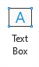
-
Blok teks "Bab 1" → Klik kanan →
Hyperlink (atau Ctrl+K).
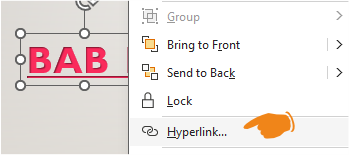
-
Pilih
Place in This Document →
pilih Slide 2 (Bab 1) → OK.
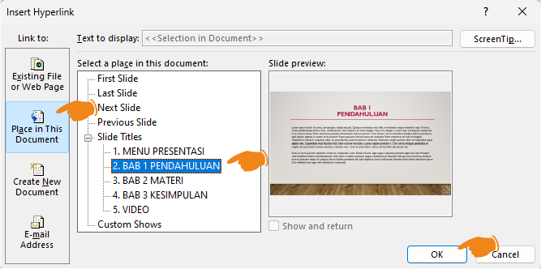
- Ulangi untuk "Bab 2 → Slide 3", "Bab 3 → Slide 4", "Video → Slide 5".
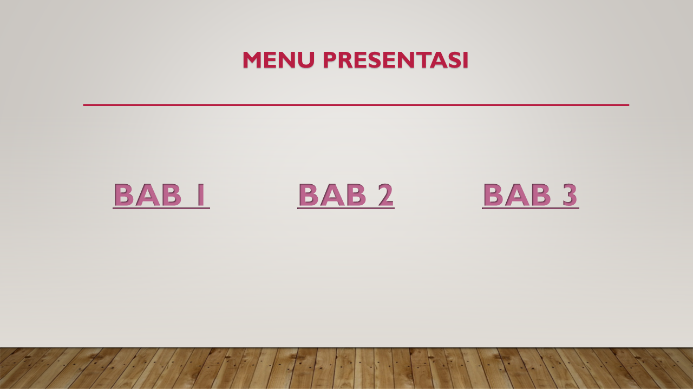
-
Tambahkan Action Button "Kembali" di setiap Slide:
- Buka Slide 2 (Bab 1).
-
Tab Insert →
Shapes →
Action Buttons → pilih
Action Button: Home (ikon
rumah).
- Gambar di pojok kanan bawah.
-
Di dialog yang muncul: pilih
Hyperlink →
Place in This Document atau
Slide… → pilih Slide 1.
- Klik OK.
- Copy-paste action button ke Slide 3, Slide 4, dan Slide 5.
- Font: Judul tiap slide 36-40 pt, isi konten 18-20 pt.
-
Tambahkan video dari YouTube:
- Buka Slide 5 → judul: "Video".
- Tab Insert → Video → Online Video.
- Paste URL YouTube (atau cari "Embed Code" dari YouTube).
- Klik Insert → video akan muncul di Slide.
- Alternatif: Jika Online Video gagal, gunakan Insert → Video → This Device dengan file contoh video .mp4 yang sudah di-download.
- Atur ukuran dan posisi video.
-
Set video play otomatis: Tab
Playback →
Start →
Automatically.
- Uji coba: Tekan F5 (Slide Show) → klik "Bab 1" → navigasi → klik Action Button kembali → coba video.
- Tambahkan tema (opsional): Tab Design → pilih tema bawaan agar tampilan lebih konsisten antar slide.
- Simpan file: File → Save → beri nama misalnya Presentasi_Interaktif.pptx.
- Buka PowerPoint → Blank Presentation.
- Buat Slide baru: Tab Home → New Slide → pilih layout Title Only → judul: "Proses Bisnis Animasi", font 36-40 pt.
-
Buat objek di Slide:
- Buat 4 kotak (Insert → Shapes → Rounded Rectangle) secara horizontal berjauhan.
- Isi teks: PROSPEK, PENAWARAN, NEGOSIASI, DEAL, font 20-24 pt tebal.
-
Buat 3 panah (Insert → Shapes → Arrow:
Right Arrow) di antara kotak.
-
Tambahkan Animasi Entrance (Fade):
- Klik kotak "PROSPEK" → Tab Animations → pilih Fade.
- Klik Panah setelah "PROSPEK" → pilih Fade.
- Klik kotak "PENAWARAN" → pilih Fade.
- Klik Panah setelah "PENAWARAN" → pilih Fade.
- Klik kotak "NEGOSIASI" → pilih Fade.
- Klik Panah setelah "NEGOSIASI" → pilih Fade.
- Klik kotak "DEAL" → pilih Fade.
-
Atur Timing Animasi:
- Tab Animations → Animation Pane.
-
Klik panah bawah pada masing-masing animasi di
panel → atur:
- "PROSPEK" → Start: On Click (muncul saat klik).
-
"Panah 1 " →
Start: After Previous
(otomatis setelah Prospek).
- "PENAWARAN" → Start: After Previous
- "Panah 2 " → Start: After Previous.
- "NEGOSIASI" → Start: After Previous.
- "Panah 3 " → Start: After Previous.
-
"DEAL" →
Start: After Previous.
-
Tambahkan Emphasis (Grow) pada "DEAL":
-
Klik kotak "DEAL" → Tab
Animations →
Add Animation.
-
Pilih Grow/Shrink (dalam group Emphasis).Atur Start: With Previous.
-
Kemudian klik Effect OptionsBeri centang pada Auto-reverse untuk efek grow-shrink kembali ke ukuran semula.
-
Tab Timing Duration: 1s.
-
Klik kotak "DEAL" → Tab
Animations →
Add Animation.
-
Tambahkan Motion Path pada "PROSPEK", ini
Opsional
Geser posisi "PROSPEK" menjadi seperti contoh gambar-
Klik kotak "PROSPEK" → Tab
Animations →
Motion Paths →
Lines.
-
Klik garis motion path → tarik ujung garis ke arah kanan
(atau geser sesuai keinginan).
Menjadi sepertri ini:
-
Tab Timing Start: With Previous,
Duration: 1s.
-
Klik kotak "PROSPEK" → Tab
Animations →
Motion Paths →
Lines.
- Uji coba: Tekan F5 → klik sekali → animasi berjalan otomatis berurutan.
- Tambahkan tema (opsional): Tab Design → pilih tema bawaan untuk mempercantik slide.
- Simpan file: File → Save → beri nama misalnya Animasi_Proses_Bisnis.pptx.
- Buka PowerPoint → Blank Presentation.
- Pilih Layout: Tab Home → Layout → pilih Title Only.
- Buat 4 Slide: Klik kanan di Slides panel → New Slide (ulangi 3 kali).
-
Isi tiap Slide dengan judul berbeda (font 36-40 pt):
- Slide 1 → "Fade"
- Slide 2 → "Push"
- Slide 3 → "Wipe"
- Slide 4 → "Morph"
-
Terapkan Transisi:
-
Klik Slide 1 → Tab
Transitions → pilih
Fade.
- Klik Slide 2 → pilih Push.
- Klik Slide 3 → pilih Wipe.
- Klik Slide 4 → pilih Morph.
-
Klik Slide 1 → Tab
Transitions → pilih
Fade.
-
Atur Durasi Transisi:
-
Di tab Transitions, pada grup
Timing:
- Duration: ketik 2 (atau gunakan tombol spinner atas/bawah hingga muncul 02,00).
- Ulangi untuk masing-masing Slide, atau klik
-
Di tab Transitions, pada grup
Timing:
-
Atur auto-advance:
-
Pada grup Timing, centang
After → ketik
3 (PowerPoint otomatis
mengonversi ke 00:03,00).
- Penting: Di PowerPoint 2024, centang On Mouse Click dan After bisa aktif bersamaan. Slide akan maju otomatis setelah 3 detik, tetapi tetap bisa diklik manual kapan saja.
- Ulangi untuk semua Slide.
- Jalankan Slide show (F5) → Slide akan berganti otomatis setiap 3 detik.
-
Pada grup Timing, centang
After → ketik
3 (PowerPoint otomatis
mengonversi ke 00:03,00).
-
Catatan Morph: Transisi Morph di Slide 4 akan bekerja optimal jika Slide 3 dan Slide 4 memiliki objek dengan nama yang sama (misal: hasil duplikasi Slide). Lihat 👉 latihan Pertemuan 3 Menengah ini untuk teknik Morph lengkap.
- Simpan file: File → Save → beri nama misalnya 4_Slide_Transisi.pptx.
- Buka PowerPoint → Blank Presentation.
- Pilih Layout: Tab Home → Layout → pilih Blank (agar leluasa menempatkan teks dan gambar).
-
Buat Slide 1:
- Hapus semua placeholder default jika masih ada.
- Insert → Text Box → ketik: "IDE".
- Font: Arial Black, size 96 pt, warna biru tua.
- Posisikan di pojok kiri Slide.
-
Duplikat Slide 1 menjadi Slide 2:
- Klik kanan Slide 1 di panel → Duplicate Slide.
-
Edit Slide 2:
- Pindahkan teks "IDE" ke pojok kanan atas.
- Ubah ukuran font menjadi 36 pt.
- Tambahkan Text Box baru dengan deskripsi: "Sebuah gagasan yang mengubah dunia".
- Font deskripsi: 20 pt, warna abu-abu.
- Tambahkan gambar ilustrasi (Insert → Pictures).
-
Terapkan Morph transition pada Slide 2:
- Klik Slide 2 → Tab Transitions → pilih Morph.
-
Durasi: set 2 (atau gunakan
spinner hingga 02,00).
- Uji coba: Tekan F5 → klik ke Slide 2 → teks "IDE " akan bergerak mulus dari kiri ke kanan sambil mengecil, sementara deskripsi dan gambar muncul.
- Simpan file: File → Save → beri nama misalnya 3_Morph_Ide.pptx.
{kind=link}
- Buka PowerPoint → Layout → Blank Presentation.
-
Buka Slide Master:
- Tab View → Slide Master.
-
Slide Master adalah Slide paling atas di panel
kiri..
- Tab View → Slide Master.
-
Tambahkan Logo di semua Slide:
- Pilih Slide paling atas (Slide Master).
-
Insert → Pictures → pilih logo perusahaan.
- Posisikan di kanan atas Slide master.
- Atur ukuran logo (jangan terlalu besar).
- Logo akan muncul di semua Slide yang menggunakan layout di bawahnya.
-
Kustomisasi Warna Korporat:
Tab Slide Master → Colors → Customize Colors.- Isi:
- Accent 1: Biru atau HEX: #005A9E
- Accent 2: Abu-abu atau HEX: #F2F2F2
- Beri nama: "Warna Korporat" → Save.
More Colors...
Colors...
- Isi:
-
Atur Font Korporat:
-
Tab Slide Master →
Fonts →
Customize Fonts.
- Heading: Calibri Light.
- Body: Calibri.
- Beri nama: "Font Korporat" → Save.
-
Tab Slide Master →
Fonts →
Customize Fonts.
-
Buat layout kustom "Layoutku":
- Klik Slide Master
- Pada Tab Panel Slide Master, klik
Insert Layout
Rename Layout Baru.
Klik kanan layout baru → Rename Layout → ketik: "Layoutku". - Insert Placeholder
-
Tab Slide Master beri centang pada Title.
-
Tab Slide Master →
Insert Placeholder → pilih
Picture → gambar di
sisi kiri layout.
-
Insert Placeholder →
Text → tempatkan di kanan.
- Catatan: Tombol Insert Placeholder hanya muncul saat Anda berada di Slide Master view (tab Slide Master → grup Master Layout), bukan di menu Insert biasa.
-
Tab Slide Master beri centang pada Title.
-
Keluar dari Slide Master: Klik
Close Master View.
-
Uji template: Setelah
Close Master View, buat Slide baru
(Home → New Slide) →
layout "Layoutku" akan
tersedia. Logo, warna, dan font sudah otomatis
terpasang.
Layoutku
Font Korporat
- Simpan file kerja: File → Save As → pilih PowerPoint Presentation (*.pptx) → beri nama misalnya 3_Template_Korporat.pptx.
-
Simpan sebagai template:
- File → Save As.
- Pilih file type: PowerPoint Template (*.potx).
- Beri nama: "Template_Korporat.potx ".
- Template siap digunakan untuk presentasi selanjutnya.
{kind=link}
-
Buat 5 Slide presentasi produk:
-
Slide 1 — Cover: Nama Produk + Tagline + Gambar Produk.
- Buka PowerPoint → pilih Blank Presentation.
- Layout: Home → Layout → pilih Title Slide.
- Klik "Click to add title" → ketik: "SmartBottle" (font 44 pt, bold).
- Klik "Click to add subtitle" → ketik: "Botol Minum Pintar untuk Gaya Hidup Sehat".
-
Sisipkan gambar produk:
- Tab Insert → Pictures → This Device.
- Pilih file gambar produk.
- Atur ukuran: Klik gambar → drag sudut (tahan Ctrl agar proporsional).
- Posisikan gambar di samping kanan teks.
-
Slide 2 — Fitur Utama: 3 fitur dengan ikon.
- Klik Home → New Slide → pilih layout Title Only.
- Klik judul → ketik: "Fitur Utama".
-
Sisipkan ikon:
- Tab Insert → Icons.
- Pada kotak pencarian, cari:
- Water — pilih ikon air/minum
- Temperature — pilih ikon suhu/termometer
- Battery — pilih ikon baterai
- Klik Insert setelah memilih ketiga ikon.
- Tab Insert → Icons.
-
Atur posisi ikon:
Seleksi ketiga ikon → Tab Graphics Format → Align → pilih Align Center dan Distribute Vertically.
-
Ubah warna ikon:
Pilih ikon → Tab Graphics Format → Graphics Fill → pilih warna. -
Beri keterangan:
Insert → Text Box di bawah masing-masing ikon:💧 Pengingat Minum — Notifikasi otomatis saat waktunya minum air. 🌡 Suhu Air — Menampilkan suhu air secara real-time. 🔋 Baterai Tahan 7 Hari — Daya tahan baterai hingga seminggu. Rapikan teks:
Seleksi semua Text Box → Tab Shape Format → Align → Align Left dan Distribute Vertically. -
Slide 3 — Manfaat Produk:
Gunakan bullet list.- Klik Home → New Slide → pilih layout Title Only.
- Klik judul → ketik: "Manfaat Produk".
-
Insert → Text Box → ketik poin-poin manfaat:
- Membantu menjaga hidrasi tubuh
- Praktis dibawa ke mana saja
- Ramah lingkungan
- Mengurangi penggunaan botol plastik
- Atur font: Home → pilih ukuran font 18–20 pt agar mudah dibaca.
- Beri ikon bullet yang menarik: Klik kanan pada bullet → Bullets → pilih style bullet atau Symbol.
-
Slide 4 — Testimoni: Tambahkan quote pelanggan.
- Klik Home → New Slide → pilih layout Title Only.
- Klik judul → ketik: "Testimoni".
-
Insert → Text Box → ketik quote pelanggan:
"Sejak memakai SmartBottle saya jadi lebih rutin minum air setiap hari."
Andi, Jakarta - Beri tanda kutip besar: Insert → Text Box → ketik " dengan font besar (72 pt, warna abu-abu muda). Letakkan di pojok kiri atas quote.
- Atur teks quote: italic, rata tengah, ukuran 20–24 pt.
-
Slide 5 — Call to Action: Kontak + harga + tombol ajakan.
- Klik Home → New Slide → pilih layout Title Only.
- Klik judul → ketik: "Dapatkan Sekarang!".
- Insert → Text Box → ketik harga: "Harga Rp299.000" (font 28 pt, bold, warna merah/oranye).
-
Buat tombol CTA:
- Insert → Shapes → Rectangle: Rounded Corners.
- Gambar shape, lalu klik kanan → Edit Text → ketik: "Pesan Sekarang".
- Shape Fill → pilih warna mencolok (misal: merah/oranye).
- Shape Format → Shape Effects → Shadow untuk efek timbul.
-
Insert → Text Box untuk kontak:
- WhatsApp : 0123456789
- Email : contoh@email.com
- Website : website.com
- Atur tata letak: Harga di tengah, tombol di bawah harga, kontak di bagian bawah Slide.
-
-
Tambahkan Speaker Notes:
-
Speaker Notes adalah catatan yang hanya terlihat oleh
presenter.
-
Klik Notes di bagian bawah
Slide (Atau View → Notes Page).
Slide 1: "Selamat pagi. Pada kesempatan kali ini saya akan memperkenalkan SmartBottle, sebuah botol minum pintar yang membantu kita menjaga kesehatan dengan mengingatkan waktu minum." Slide 2: "Produk ini memiliki tiga fitur utama. Pertama pengingat minum. Kedua menampilkan suhu air secara real-time. Ketiga baterainya mampu bertahan hingga tujuh hari." Slide 3: "Dengan fitur tersebut, pengguna menjadi lebih sehat, hemat biaya, dan turut menjaga lingkungan karena mengurangi penggunaan botol plastik." Slide 4: "Berikut salah satu testimoni pelanggan yang telah menggunakan produk ini selama beberapa bulan." Slide 5: "Demikian presentasi saya. Jika tertarik, SmartBottle dapat dimiliki dengan harga Rp. 299.000 Terima kasih atas perhatian Anda." Catatan: Speaker Notes berarti:- Speaker = orang yang berbicara (presenter/pembicara)
- Notes = catatan
-
Klik Notes di bagian bawah
Slide (Atau View → Notes Page).
-
Gunakan Presenter View:
-
Tekan Fn + F5 (Jika menggunakan Laptop),
Tekan F5 (Jika menggunakan Desktop (PC)),
Tekan Alt + F5 (atau Slide Show → Presenter View).
Layar presenter: menampilkan Slide, Notes Preview, Timer, dan Slide berikutnya.
Catatan: Presenter View hanya aktif jika PowerPoint mendeteksi 2 monitor (proyektor/layar eksternal).
Jika hanya 1 layar Alt + F5 tetap menunjukkan Slide penuh — gunakan Windows + P → Extend untuk mengaktifkan monitor kedua.
Sedangkan audiens hanya melihat Slide Presentasi. -
Latih Rehearse Timings:
-
Tab Slide Show →
Rehearse Timings.
-
PowerPoint akan membuka layar penuh
(Recording Studio baru di PPT
2024). Timer muncul di pojok kiri atas.
Lakukan presentasi seperti biasa:
- Klik kiri atau tekan → untuk pindah Slide.
- Jelaskan isi setiap Slide sesuai Speaker Notes.
- Usahakan waktu tiap Slide sekitar 10-30–40 detik, sehingga total presentasi mendekati 3 menit.
- Klik Close (X).
- Akan muncul pertanyaan: Keep the Slide timings?
- Pilih Yes.
- Tekan F5 → Slide show akan berjalan otomatis sesuai timing yang direkam.
-
Tab Slide Show →
Rehearse Timings.
{kind=link}
- Buka PowerPoint → pilih Blank Presentation.
-
Buat 7 Slide
Terapkan tema yang profesional dan konsisten (Design → pilih tema, misal: Wisp, Ion atau Banded).-
Slide 1 — Cover
- Layout: Title Slide
- Judul : FRESHBOX
- Tagline : "Belanja Sayur Segar, Praktis dalam Sekali Klik."
- Isi :
- Business Pitch
- Nama Presenter
- Nama Perusahaan
- Tanggal Presentasi
- Gambar Sayur di sebelah kanan
- Animation:
- Judul: Fade, Start After Previous
- TextBox: Wipe, Start After Previous
- TextBox: Wipe, Start After Previous
-
Slide 2 — Masalah & Solusi
- Layout: Title Only
- Judul : MASALAH & SOLUSI
- Isi :
Masalah- Banyak orang sibuk sehingga tidak sempat belanja.
- Sayur di pasar sering tidak segar.
- Harus antre dan menghabiskan waktu.
- Pesan lewat aplikasi.
- Sayur dipanen setiap pagi.
- Diantar dalam waktu kurang dari 2 jam.
- Animation:
- Judul: Fade
- TextBox: Appear, Start After Previous
- TextBox: Wipe, Start With Previous
- Picture: Zoom, Start After Previous

-
Slide 3 — Produk
- Layout: Title Only
- Judul : PRODUK
- Isi :
- Fitur Utama
- Order online
- Tracking pengiriman
- Pembayaran digital
- Promo mingguan
Animation:- Judul: Fade
-
3 gambar produk: Klik gambar 1 → Zoom, Start After Previous.
Ulangi untuk gambar 2 dan 3 dengan Zoom, Start After Previous.
Tips: Jika bingung gambar mana yang sudah diberi animasi, buka Selection Pane (Tab Home → Select → Selection Pane) untuk melihat daftar semua objek di Slide. - Text Box: Wipe, Start
After Previous,
Atur Durasi di:- Tab Animation
Atau
- Tab Animation
Timming
-
Slide 4 — Potensi Pasar
- Layout: Title Only
- Judul : POTENSI PASAR
- Isi :
Grafik/chart potensi pasar (Insert → Chart)
Isi Data Chart:Jika ingin Edit Data Chart, klik pada Chart kemudian Klik kanan pilih Edit DataDaftar Text Box :- Pasar grocery online terus meningkat.
- Pertumbuhan sekitar 25–35% per tahun.
- Target awal kota besar.
Animation:- Judul: Fade
- Chart: Wipe, Start After Previous
- TextBox: Wipe, Start
After Previous
-
Slide 5 — Business Model
- Layout: Title Only
- Judul : BUSINESS MODEL
-
Isi :
Sumber Pendapatan- Margin penjualan produk
- Biaya pengiriman
- Membership Premium
- Iklan produk UMKM
- Biaya Operasional
- Biaya tenaga kerja
- Biaya alat dan mesin
- Biaya sewa tempat
- Biaya listrik dan air
- Insert → Table
- Insert → Text Box : "Margin
rata-rata 30%".
- Insert → Shape:
- Rectangle: Rounded Corners
- Arrow: Right
Animation:- Judul: Fade
- TextBox: Wipe, Start After Previous
- TextBox: Wipe, Start After Previous
- Table: Wipe, Start After Previous, Direction: From Top
- TextBox: Wipe, Start After Previous, Direction: From Left
- Diagram: Wipe, Start After Previous, Direction: From Left
Untuk ubah Direction:
Contoh ubah Direction untuk Table.
-
Slide 6 — Tim Kami
- Layout: Title Only
- Judul : TIM KAMI
- Isi :
- Insert → SmartArt →
Hierarchy
- Insert → SmartArt →
Hierarchy
- Insert → Table
- CEO: Andi
- CTO: Budi
- Marketing: Sinta
- Finance: Rina
Isi data seperti contoh gambar Slide
Animation:- Judul: Fade, Start On Click
- Diagram: Wipe, Start After Previous
- Content: Wipe → Effect Options →
Level One
by One,
Start After Previous.

-
Slide 7 — Call to Action
- Layout: Title Only
- Judul : Mari Bertumbuh Bersama Kami
- Isi :
- Yang Kami Cari
- Investasi
- Partner Strategis
- Supplier Baru
- Mentor Bisnis
- Kontak
- hello@freshbox.id
- +62 812-3456-7890
- http://www.freshbox.id
- Tagline
- "Bersama FreshBox, belanja kebutuhan segar menjadi lebih mudah, cepat, dan terpercaya."
Animation:- Judul: Fade, Start On Click
- TextBox: Zoom, Start After Previous
- TextBox: Fade, Start After Previous
- TextBox: Float In, Start After Previous

-
Slide 1 — Cover
{kind=link}
{kind=link}
{kind=link}
{kind=link}
-
Gunakan Morph transisi antar Slide:
- Pilih Slide 2 → Tab Transitions → pilih Morph.
- Ulangi untuk Slide 3, 4, 5, 6, dan 7.
- Tips: Morph akan menganimasikan objek yang memiliki nama sama antar Slide. Lihat kembali Pertemuan 3 — Menengah untuk teknik duplikasi Slide agar Morph bekerja optimal.
- Uji coba: Tekan F5 → Slide akan bertransisi mulus.
PT Inovasi Digital Nusantara
Tagline: "Solusi Teknologi untuk Masa Depan Bisnis"
- View → Slide Master
pilih Slide paling atas. - Tambahkan Logo
letakkan di pojok kiri atas agar muncul di seluruh Slide.
Ukuran sekitar 3 cm × 3 cm.
{kind=link}
- Membuat Tema Warna Korporat sendiri dengan nama "Warna
Temaku".
Pilih Customize Colors...Untuk latihan kali ini yang penting adalah:
- Accent 1 = Biru
- R = 11
- G = 94
- B = 215
- Accent 2 = Orange
- R = 243
- G = 156
- B = 18
- Accent 3 = Abu-abu
- R = 85
- G = 85
- B = 85
RGB dengan HEX berbeda, jadi bisa pilih salah satu RGB atau HEX.
Untuk Memasukkan kode RGB atau HEX → More Colors...
Contoh: - Accent 1 = Biru
-
Untuk Tema seluruh halaman Slide bisa dipilih di
- Membuat Tema Font Korporat sendiri dengan nama
"Fontku".
Pilih Customize Fonts...
- Heading font: Calibri
- Body font: Aptos
Beri nama tema font, misalnya "Fontku"
Klik Save.
-
Buat layout baru
Pilih Slide Master paling atas → Insert Layout
- Rename layout tersebut:
Klik kanan pada layout → Rename Layout
-
Tambahkan placeholder untuk gambar di sebelah kiri:
Tab Slide Master → Insert Placeholder → Picture
Gambar placeholder akan muncul di layout, ubah ukurannya menjadi setengah Slide (kiri)Tambahkan placeholder untuk teks di sebelah kanan:
Tab Slide Master → Insert Placeholder → Text
Ubah ukuran placeholder teks menjadi setengah Slide (kanan).
-
Close Master View.
Sekarang seluruh Slide memakai desain yang sama dan kembali ke tampilan normal.
- Informasi (Opsional)
placeholder Footer di Slide Master tidak otomatis muncul pada Slide. PowerPoint memperlakukan Footer berbeda dengan placeholder biasa.Keluar dari Slide Master (Close Master View), lalu lakukan langkah berikut:
Mengapa Footer tidak muncul?
Meskipun di Slide Master Anda sudah mengaktifkan:- ✓ Date
- ✓ Footer
- ✓ Slide Number
- Buka tab Insert.
- Klik Header & Footer.
- Pada tab Slide:
- ✓ Centang Date and time (opsional)
- ✓ Centang Slide number (opsional)
- ✓ Centang Footer
- ✓ Isi teks footer, misalnya: Latihanku
- ✓ Klik Apply to All.
Layout: Title Slide
Isi:
- Judul: PT. INOVASI DIGITAL NUSANTARA
- Subtitle: "Solusi Teknologi untuk Masa Depan Bisnis"
- Logo perusahaan
{kind=link}
- Background gambar Kantor Modern.
Pilih Contoh Gambar Background Slide yang sudah di download.Hasil:
- Slide Transitions : Morph
Klik Slide Cover. -
Animations:
- Logo : Fade → Start After Previous
- Judul → Zoom → Start After Previous
- Subjudul → Fade → Start After Previous.
{kind=link}
Isi:
Gunakan Shape → Rectangle: Rounded Corners.
Gunakan ikon di setiap menu.
- 👤 Profil Perusahaan
- 📦 Produk Data Penjualan
- 📈 Kontribusi Penjualan Produk
- 🎬 Video Company Profile
- 👥 Tim Kami
- Slide Transitions : Morph
Klik Slide Daftar Isi. -
Animations:
- Judul : Fade → Start After Previous
- TextBox : Wide → Effect Options → By Paragraph → Start After Previous.
- Layout: Title Only
- Judul: "PROFIL PERUSAHAAN"
-
Kiri: Foto kantorKanan:
Tentang Kami
PT Inovasi Digital Nusantara merupakan perusahaan yang bergerak di bidang pengembangan aplikasi, website, dan sistem informasi untuk bisnis modern. - Visi: Menjadi perusahaan teknologi terpercaya di Indonesia.
- Misi: Inovasi, Kualitas, Pelayanan.
-
Slide Transitions : Morph
Klik Slide Profil Perusahaan. -
Animations:
- Judul : Fade → Start After Previous
- Gambar → Float In → Start After Previous
- TeksBox → Wipe → Effect Options → By Paragraph → Start After Previous.
{kind=link}
Klik Slide PRODUK DATA PENJUALAN.
- Judul : Fade → Start After Previous
- Blok semua Kotak Shape → Float In →
Start After Previous
- Blok semua Kotak Shape →
Duration → 00,50
Masukkan Table: Insert → Table → 5 x 5 Table
Atur Table, bisa juga ubah ukuran Font misalnya menjadi 16.
Masukkan Chart: Insert → Chart → Column
Input Contoh Data:
| Produk | Q1 | Q2 | Q3 | Q4 |
|---|---|---|---|---|
| CloudSync | 180 | 220 | 250 | 300 |
| ERP Smart | 150 | 170 | 210 | 240 |
| AI Assistant | 90 | 130 | 180 | 250 |
| SecureNet | 120 | 145 | 170 | 210 |
Klik Slide KONTRIBUSI PENJUALAN PRODUK.
- Judul : Fade → Start After Previous
- Table : Fade → Start After Previous
- Chart : Wipe → Start After
Previous
Judul: "VIDEO COMPANY PROFILE"
Klik Slide VIDEO COMPANY PROFILE.
Tambahkan teks: "Klik tombol Play untuk memutar video." dibawah Video dengan ukuran Font semisal 14 dan posisi Rata Tengah.
Atur pada Tab Playback → Start → When Clicked On.
Klik Slide TIM KAMI.
Isi:
- Marketing
- Finance
- IT
- HR
- BR
Klik Kolom Chart → From a File
- Judul : Fade → Start After Previous
- Diagram : Wipe → Effect
Options → One by One agar setiap bagian muncul satu per
satu. Start After
Previous
Klik Slide TIM KAMI.
Isi:
- Mari Bekerja Sama!
- 📧 info@idn-tech.co.id
- ☎ (021) 555-1234
- 🌐 www.idn-tech.co.id
Animations:
- Judul : Fade → Start After Previous
- TextBox : Zoom → Start After Previous
- TextBox : Wipe → Effect Options → By Paragraph → Start After Previous → Direction: From Left
- TextBox : Wipe → Start After
Previous → Direction: From Left
- Buka Slide 3 (Profil Perusahaan).
- Insert → Shapes → Action Button: Home 🏠 (kategori Action Buttons).
- Gambar di pojok kanan bawah slide.
- Di jendela Action Settings, pilih Hyperlink to: → Slide… → pilih Slide 2 (Daftar Isi) → OK.
- Ulangi langkah 1–4 untuk Slide 4, 5, 6, 7, dan 8.
Hasil: Presentasi terasa seperti aplikasi interaktif dengan navigasi bolak-balik yang mulus.
Tugas
Kerjakan 5 tugas berikut secara berurutan. Setiap tugas membangun keterampilan dari pertemuan sebelumnya.
- Buka PowerPoint → Blank Presentation.
- Slide 1 (Cover): Layout Title Slide. Isi nama perusahaan dan tagline. Font judul 36–40 pt, subjudul 18–20 pt.
- Slide 2 (Visi & Misi): Layout Title Only. Judul "Visi & Misi". Body: 2–3 bullet visi dan misi (font 18–20 pt).
- Slide 3 (Struktur Organisasi): Layout Title Only. Judul "Struktur Organisasi". Gunakan Insert → SmartArt → Hierarchy.
- Slide 4 (Produk & Layanan): Layout Title Only. Judul "Produk & Layanan". 3–4 bullet deskripsi produk (font 18–20 pt).
- Slide 5 (Penutup): Layout Title Slide. Ucapan terima kasih dan kontak perusahaan.
- Tambah tema (opsional): Tab Design → pilih tema yang sesuai.
- Simpan file: File → Save As → T1_Profil_Perusahaan.pptx.
- Buka file T1_Profil_Perusahaan.pptx.
- Pilih bullet poin di Slide 2 → Tab Animations → pilih Fade.
- Atur Start: After Previous Duration: 01.00.
- Gunakan Animation Painter untuk menyalin animasi ke bullet di Slide 3 dan 4.
- Klik Slide 1 → Tab Transitions → pilih Push → klik Apply To All.
- Pada grup Timing, centang After → ketik 3 → klik Apply To All.
- Uji coba: Tekan F5 — slide berganti otomatis tiap 3 detik dengan animasi.
- Simpan file: File → Save As → T2_Animasi_Transisi.pptx.
- Buka PowerPoint → Blank Presentation.
- Buat 5 Slide dengan layout Title Only.
- Slide 1 (Menu): Judul "Daftar Isi". Buat 4 teks (Slide 2–5) sebagai menu. Insert → Text Box untuk tiap item.
- Beri Hyperlink pada tiap teks menu: Klik kanan teks → Link → Place in This Document → pilih slide tujuan.
- Slide 2–5 (Konten): Isi judul dan konten masing-masing (misal: Visi, Produk, Galeri, Kontak).
- Pada tiap Slide 2–5, tambahkan Action Button: Insert → Shapes → Action Button: Home → gambar di slide → Hyperlink to: Slide 1.
- Ulangi untuk semua slide konten.
- Uji coba: Tekan F5 → klik menu → navigasi berfungsi.
- Simpan file: File → Save As → T3_Navigasi.pptx.
- Buka PowerPoint → Blank Presentation.
- Slide 1 (Cover): Layout Title Slide. Judul "Laporan Penjualan" + nama perusahaan.
- Slide 2 (Data Kategorisasi): Layout Title Only. Judul "Kategori
Produk".
- Insert → Table → 4 baris × 3 kolom. Isi: No, Kategori, Jumlah.
- Di bawah tabel: Insert → SmartArt → List → pilih gaya sesuai data.
- Slide 3 (Grafik Penjualan): Layout Title Only. Judul "Grafik
Penjualan".
- Insert → Chart → Column → isi data di sheet Excel yang muncul.
- Sesuaikan judul sumbu dan legenda.
- Tambah tema: Tab Design → pilih tema korporat (biru/abu).
- Simpan file: File → Save As → T4_Visualisasi_Data.pptx.
- Buka PowerPoint → Blank Presentation.
- Buat template via Slide Master:
- Tab View → Slide Master.
- Pada Slide paling atas: Insert → logo perusahaan di kanan atas.
- Tab Slide Master → Colors → Customize Colors → buat tema warna (Accent 1: biru #005A9E, Accent 2: abu #F2F2F2).
- Tab Slide Master → Fonts → atur Heading: Calibri Light, Body: Calibri.
- Close Master View.
- Buat 5 Slide:
- Slide 1 (Cover): Layout Title Slide. Judul produk + subjudul.
- Slide 2 (Produk 1): Layout Title Only. Gambar + deskripsi.
- Slide 3 (Produk 2): Duplikat Slide 2 → ganti gambar & teks.
- Slide 4 (Produk 3): Layout Title Only. Ikon + bullet poin.
- Slide 5 (Penutup): Layout Title Slide. Kontak + ajakan (CTA). Insert → Icons → pilih ikon sosial media.
- Animasi: Pilih elemen tiap slide → Tab Animations → Fade → After Previous, durasi 01.00.
- Transisi Morph: Klik Slide 3 → Tab Transitions → Morph (karena Slide 3 hasil duplikat Slide 2).
- Navigasi: Di Slide 2–4, tambahkan Insert → Shapes → Action Button: Home → Hyperlink to: Slide 1 sebagai tombol Back.
- Uji coba: Tekan F5 — pastikan animasi, Morph, dan navigasi berjalan.
- Simpan file kerja: File → Save As → PowerPoint Presentation (*.pptx) → T5_Final_Project.pptx.
- Simpan sebagai template (opsional): File → Save As → PowerPoint Template (*.potx) → T5_Template_Korporat.potx.